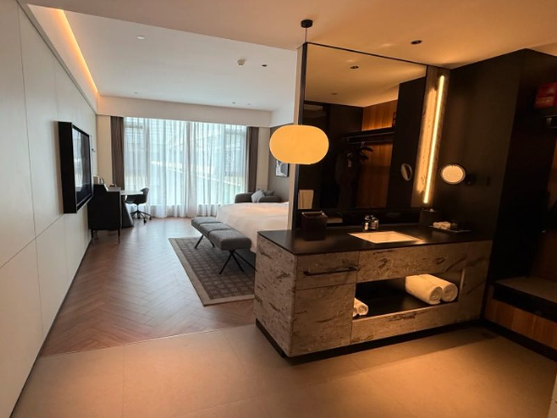
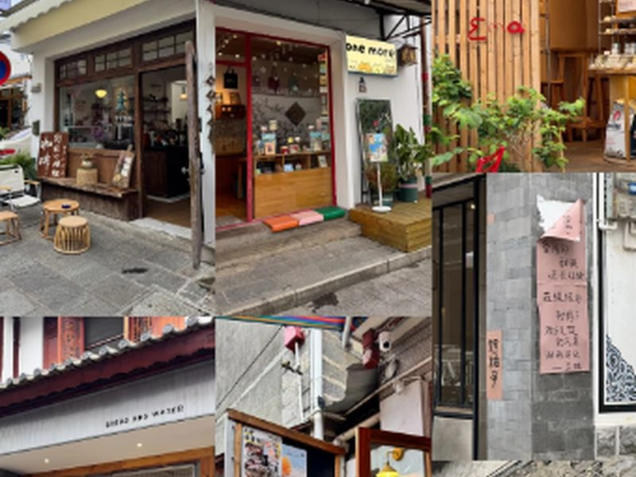
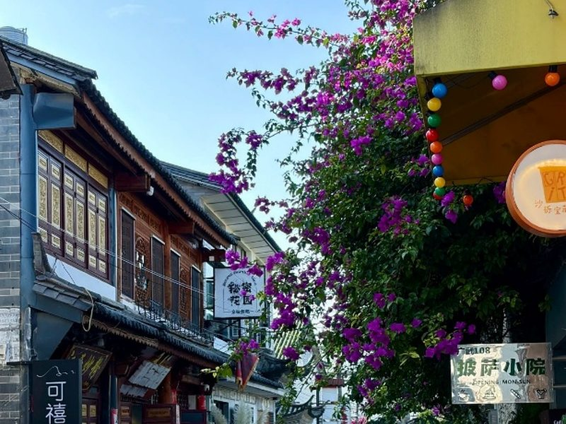
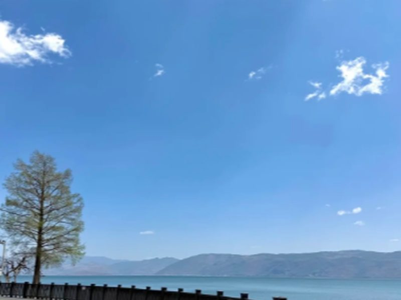
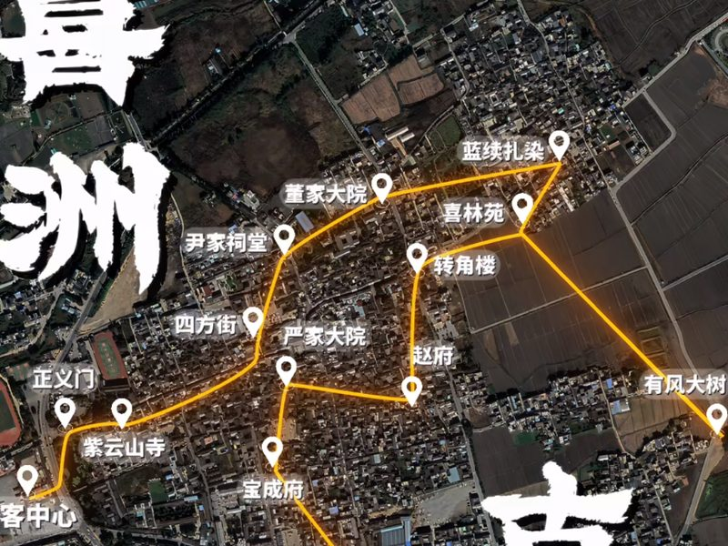
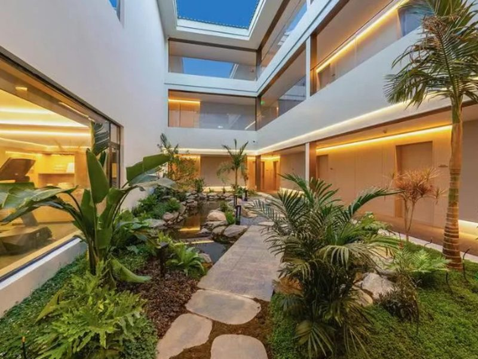
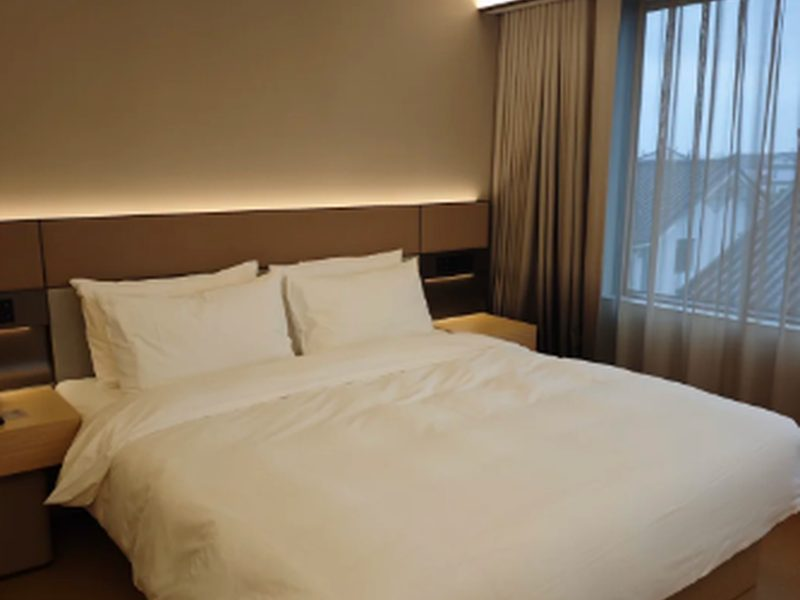
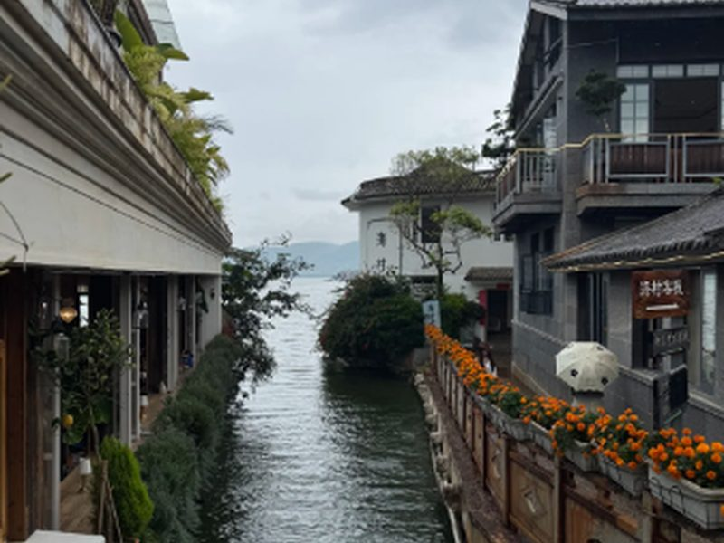

2026.10.16 – 10.20 · 古城 · 喜洲 · 理想邦 · 雙廊
| 日期 | 主題 | 住宿 |
|---|---|---|
| D1 10/16 | 抵達 · 大理古城 | 古城（城際酒店） |
| D2 10/17 | 採蘑菇 · 生態廊道 · 喜洲古鎮 | 古城（城際酒店） |
| D3 10/18 | 轉場 · 松雲懸崖酒店 · 理想邦 | 松雲懸崖酒店 |
| D4 10/19 | 旅拍 · 雙廊 · 小普陀 | 全季酒店雙廊古鎮店 |
| D5 10/20 | 返程（11:25 航班） | — |







